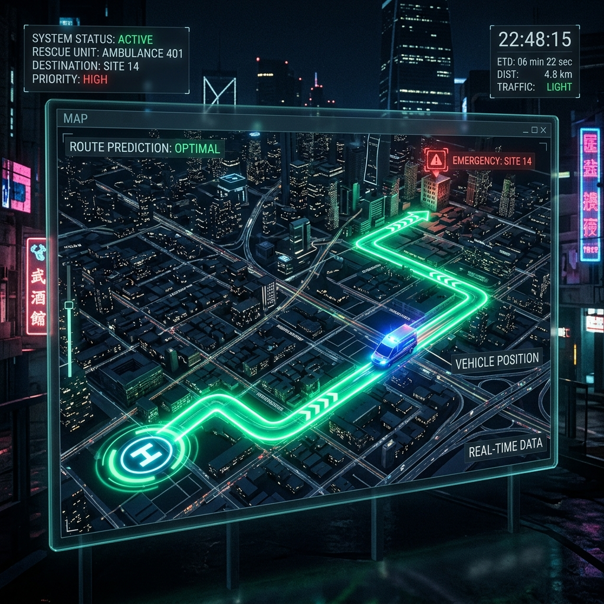

Naše Projekty

Tvorba realistických simulací městského provozu
Téma tvorby realistických dopravních simulací na základě historických dat. Kombinujeme data z kamer, floating car data a dopravní statistiky pro vytvoření uceleného obrazu pohybu ve městě pomocí simulátorů jako SUMO.

Predikce tras záchranných složek
Zajištění plynulého průjezdu IZS pomocí komunikace se semafory a využití historických dat pro přesné předpovědi tras výjezdů.

NN VGA & Optimalizace
Nasazení a trénink neuronových sítí (NN VGA / VRP) pro pokročilé optimalizační úlohy v logistice a mobilitě.
Rush Hour Game
Interaktivní logická hra demonstrující složitost dopravních problémů.
Vyzkoušet Demo →Témata závěrečných prací
Hledáme motivované studenty pro bakalářské i diplomové práce. Stačí nástřel, co student může dělat, detaily doladíme na míru.
Vedoucí: Adéla
Práce na aktualizaci a rozvoji metod řešících Vehicle Routing Problem (VRP) s využitím moderních architektur neuronových sítí. Ideální pro studenty se zájmem o Deep Learning a aplikovanou AI.
Vedoucí: Petr
Zpracování reálných historických trajektorií pro modelování výjezdů IZS. Cílem je včas komunikovat se semafory pro udělení prioritního průjezdu.
Vedoucí: Dle domluvy
Práce na údržbě a inovacích stávajících nástrojů. Smazání zastaralého roadgraphtool a aktualizace modelů pro záchranky a NN VRP.
Vedoucí: Tim
Spojování různých datových zdrojů (FCD, kamery, dopravní statistiky) pro stavbu komplexních modelů ve špičkových simulátorech (např. SUMO) a testování dopadů různých scénářů.
Kontakty
Kancelář: Karlovo náměstí 13, Budova E, Místnost E-112 (Generický placeholder)